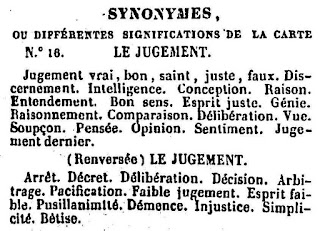
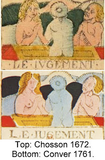

Judgment
The Early Cards, from c. 1440 Milan to 1736 Marseille
In the 15th and 16th century Italian lists of tarot subjects, from Bologna, Ferrara, and Florence, the card we know as Judgment was invariably called "L'Angelo", The Angel, from the figure at the top of the card. In the earliest extant cards, there are in fact two angels; by tradition these would have been Michael and Gabriel. The words "surgite ad Justiciuz" on the earliest exemplar, from 1440s Lombardy, leaves no doubt as to the subject: the Last Judgment, when the dead were thought to resuscitate bodily and emerge from their tombs, from there to be sent to heaven or hell for eternity, according to their deserts. This card has four individuals, three of them naked, two of them looking at the one above them and the third staring in front of him and praying. There is also a fourth figure, clothed. He seems to be a saint or perhaps Christ himself, making it all happen.

{kind=link}

The next cards, printed instead of hand painted, reduce the angels to one and the people below to three at most. Below, the Geoffroy is from Lyon, France and the Rothschild from somewhere in Tuscany or Umbria (it survived in a book bound in Perugia). The Minchiate versions had the skyline of whatever city produced it. Here the one tall, leaning tower and a few smaller ones suggest Bologna. Another version, with "Fama Vola" on it (Glory Flies), has the famous Bruneleschi dome of Florence and the tower of the Palazzo delle Signoria.
The French decks of the 17th century continued the motif of one trumpeting angel and three nude figures. Below are the Anonymous of Paris, 1st half of 17th century, Vieville c. 1650, Noblet c. 1660 Paris, and Dodal 1709 Lyon. The last two are examples of what Thierry Depaulis has dubbed the "Tarot de Marseille I" design. It has the innovation that the central figure has his back to us and his hair is in the form of a tonsure, suggesting a religious figure, such as a monk or priest. In the Dodal, he is even a different color. The lines on his back are also a bit odd, in that that on the right side the lines resemble a female breast. To some this is the suggestion of androgeny, since the design is only on one side.
An oddity about the early lists, and the cards themselves when numbers were put on them, is that it was not second to last, as it came to be in the French decks, but either last or third to last. As last, it corresponds to the Triumph of Eternity in Petrarch's I Trionfi. As third to last it precedes the Justice card, after which comes the final triumph, whose title, according to the anonymous preacher who first presented this order, was "El Mundo, cioe Dio (il Papa)", i.e. "The World, that is God (the Father)". One only arrives at the highest destination if one merits it, in this version of the order. In that case the world inside the circle in the Ferrarese or Venetian printed cards below is the New Jerusalem.
Court de Gebelin, Count de Mellet and Etteilla
 The late 18th century, starting in 1781 Paris, saw a couple of new interpretations of the card. Court de Gebelin proclaimed it to signify the creation, with the people emerging from the ground as synmbolizing the creation of humanity from the dust of the earth. His collaborator the Count de Mellet, in his essay in the same volume of Le Monde Primitif, accordingly maintained that the cards should be read in reverse order, with the divine World before creation as first and the creation of the world second, and so on, through the ages of gold, silver, iron, and brass, a gradual deterioration of values ending with the Fool.
The late 18th century, starting in 1781 Paris, saw a couple of new interpretations of the card. Court de Gebelin proclaimed it to signify the creation, with the people emerging from the ground as synmbolizing the creation of humanity from the dust of the earth. His collaborator the Count de Mellet, in his essay in the same volume of Le Monde Primitif, accordingly maintained that the cards should be read in reverse order, with the divine World before creation as first and the creation of the world second, and so on, through the ages of gold, silver, iron, and brass, a gradual deterioration of values ending with the Fool. Etteilla, who also held that the tarot was invented in Egypt, agreed that the first seven cards were "originally" about the seven days of creation, and accordingly moved the Sun, Moon, and Star cards to the beginning of the sequence as well as inventing new cards (which he maintained were Egyptian) to fit his conceptions. The Judgment card, however, remained as Judgment and was part of the deterioration of values from the original state of humanity. However it was no longer the Last Judgment: the definite article "Le" ("The" in French) was finally removed from the title. Despite the conventional scene on the card, it was now Judgment adapted to fortune-telling, in other words the ordinary judgments of human beings. This can be seen from his account in his Third Cahier:
No. 16. Judgment. C.B.A., Judgment in C, says that you judge on nothing. B.C.A., what you judge of B is true; what you judge of A is false; means Judgment.Given the three cards in a reading, then, the card signifies one's judgment about whatever is signified by the card before and the card after.
The secularization of Judgment is also seen int the word lists that Etteilla's disciples, under his supervision initially, provided for the card (except for the ones in brackets, which are from Papus's list in Le Tarot Divinitoire (tr. Stockman), these are my translations of those provided by "Julia Orsini" in 1838 (original at right):
The Reverseds are more negative than the Uprights. However even in the Uprights the card can represent a false judgment, probably following his guideline indicated in the 3rd Cahier. The card can also represent the Last Judgment, but it is only one of many meanings, most of which refer to the fortune-teller's client's more immediate concerns. It is probably for this reason that the Etteilla deck as currently published abandons "Jugement" altogether as a keyword, replacing it with two of the "synonyms and alternative meanings" from the word-list.16. [Jugement] JUDGMENT - Judgment that is true, good, holy, correct, false. Discernment. Dedication, Intelligence, Conception, Reason, Understanding, Good Sense, Correct Opinion, Genius, Power of Reasoning, Comparison. Deliberation.-View, Suspicion, Thought.-[Strong Belief,] Opinion. Sentiment, [Disband, Dissolve]. Last Judgment.
Reversed: [Jugement]: JUDGMENT. Arrest, Decree, Deliberation, Decision [Outcome], Arbitration. Pacification. Poor judgment, Feeble-mindedness, Weak-Mindedness, Pusillanimity. Dementia. Injustice. Simplicity [Naïveté]. Stupidity.
Eliphas Levi and the Esotericists Influenced by Him
Much in keeping with de Gebelin's view of the card, Eliphas Levi in 1860 said it signified "the vegetative, the generative power of the earth, eternal life". At the same time his specification of who the three people on the ground were became definitive for many later theorists, saying of the "dead who come out of their tombs" that "these dead who become again living are a man, a woman, and a child, the ternary of human life." This ternary will be repeated by Christian, Waite and Case. Christian gave "Renewal" as its keyword and said it represented "the passage from life on earth to the life of the future". Hence it is important "not to fall asleep in laziness or forgetfulness", because "the ascent of the soul is the fruit of its successive ordeals". Yet for Christian as for Etteilla, it concerns not only the final goal, but also the turns of fortune in this life. "Hope in suffering, but beware of prosperity. ... At a moment unknown to you the wheel of fortune will turn, and you will be raised up or cast down by the Sphinx." He is evidently comparing card XX with card X.
...It is the card which registers the accomplishment of the great work of transformation in answer to the summons of the Supernal--which summons is heard and answered from within.Of interest also is his list of divinatory meanings:
What is that within us which does sound a trumpet and all that is lower in our nature rises in response--almost in a moment, almost in the twinkling of an eye? Let the card continue to depict, for those who can see no further, the Last judgment and the resurrection in the natural body; but let those who have inward eyes look and discover therewith. They will understand that it has been called truly in the past a card of eternal life, and for this reason it may be compared with that which passes under the name of Temperance.
20. THE LAST JUDGMENT.-- Change of position, renewal, outcome. Another account specifies total loss though lawsuit. Reversed: Weakness, pusillanimity, simplicity; also deliberation, decision, sentence.These would seem to be derived from Eteilla and Christian. The idea of "total loss" is from "Julia Orsini's" commentary attached tot he card. However she adds that the loss will be offset by an unexpected inheritance.

The ancestral constructors of a better Humanity are depicted in the Tarot by the parents of the young resuscitated boy of arcana 20. Placed on the right, the fatheris the incarnation of all the constructive philosophy of the past, of every profound and wise thing that human reason has conceived concerning the Great Art which is that of life lived in full knowledge of its laws. On the left the mother corresponds to the heart, to religious feeling which truly pious souls have always had.Between them, the son is the outcome of an evolution of spirit that started with the Magician and continued with the Charioteer and the Hanged Man. He represents "the reign of the Holy Spirit which will bring about religious unity based on the esotericism which is common to all religions", an inner unifying spirit beyond differences in "forms of worship and dogmas", so that
By refiguring itself, our spirit, while remaining identical to itself, is transfigured to become god-like in proportion to the nobility which it reaches.At the same time, matter is not to be despised, but rather "as a substance to be put to work. It imprisons the spirit, not to hold it indefinitely, but to force it into an effort to free itself."
The Holy Spirit itself is represented in the Angel, whose green wings are the color of the Holy Spirit. Moreover:
The Angel's hair corresponds to the transcending principles from which flow notions inaccessible to human intelligence ... in the form of inspiring beams. Some of these correspond to brilliant ideas (the golden rays), while others (the red rays) encourage us in great and noble actions.Positively the card represents the "raising of healing powers and return to physical, mental and intellectual health, liberation, freedom, separation from wrongs suffered", and so on. Negatively the danger is "spiritual and mental intoxication, over-excitement, both natural and artificial, lack of balance ... noise, agitation for no reason."

As an instrument for amplifying sound vibration, the trumpet refers to the fact that the awakening of the higher consciousness is actually accomplished by certain sounds.The card as a whole represents the awareness that personal existence is but a mode of universal consciousness.
At this stage, the adept realizes that his personal existence is nothing but a manifestation of the relation between self-consciousness and subconsciousness. H sees, also, that self-consciousness and subconsciousness are not themselves personal, but are modes of universal consciousness. He knows that in reality his personality has no separate existence. At this stage, his intellectual conviction is confirmed by a fourth-dimensional experience, which blots out the delusion of separateness.This "fourth-dimensional experience" is shown on the card by the figures emergence at right angles to their coffins, which in reality is in a fourth dimension, that of spirit.
The human figures stand upright, so that their bodies are at right angles to the bottoms of the coffins. This intimates something which is impossible to delineate — the mathematical definition of the Fourth Dimension as that which is at right angles to all three dimensions of space, as we perceive them.He affirms the interpretation of the three figures as Osisris, Isis, and Horus:
The three figures represent self-conscious awareness (the man), subconsciousness (the woman), and their product, the regenerated personality (the child). They correspond also to the Egyptian triad, Osiris the father, Isis the mother, and Horus the child.In Case's version, moreover, the three figures' arms spell out the three letters L, V, and X, which in Latin spells "Lux" or Light.
Another aspect of the card is what is behind the three figures. According to Case it is icebergs, which signifies the alchemical "fixation of the volatile":
The icebergs in the background refer to a certain alchemical dictum, which says that in order to perform the Great Work, we must fix the volatile. The volatile is the stream of conscious energy, typified as water. Its flow gives rise to the illusions from which our delusions are derived. TIhen we fix it, or make it solid by arresting the flow, we are emancipated from bondage.In that way the coffins are seen as in the midst of a vast sea, colored blue on the card. This seems to contradict his previous assertion that the substrate is ice. It is apparently the work of self-consciousness to "fix" this sea by recognizing it as changeless in reality as well as ever-changing in appearance.
Jungian interpretations
Sallie Nichols observes that the four figures on the card can be seen as a quaternity, a four-foldness also suggested by the banner that the angel holds. In particular, the quaternity is that of the four functions. She identifies the dominant or first function as that of the hero in the middle, in which case the Angel would represent the opposite function, which is also the inferior function. The two figures on the sides would correspond to the second and third functions.
In our culture it is the thinking function that is typically dominant, to the detriment of feeling. In the Tarot, she says, it is the Chariot card that particularly shows the dominance of thinking, as the charioteer who mediates between noble feelings (the light horse) and sensation (the dark, lustful horse). However the hero is also shown emerging from under the ground, she says. His over-reliance on thinking has caused a kind wounding unto death, in fact two deaths, on the Death card and again on the Tower card, from which he only now is re-emerging, but more connected with his second and third functions, on either side, and even, although still further off, with his inferior function. It is thereby a revitalization of libido via the fourth function, represented by the angel..
Although Nichols does not cite Jung on this point, it is the inferior function that is closest to the divine, in the sense of the Self or total personality, precisely because it is furthest from ego-consciousness and the dominant funct. It is by means of the inferior function that we learn what we are missing by depending on our dominant function. Here I quote Marie-Louise von Franz ("The Feeling Function", p. 7). After examining certain hero-figures in mythology and fairy tales, she observes:
If one studies individual cases, one can see that the inferior function tends to behave after the manner of such a 'fool' hero, the divine fool or idiot hero. He represents the despised part of the personality, the ridiculous and unadapted part, but also that part which holds up the connection with the unconscious and therefore holds the secret key to the unconscious totality of the person.And of course the description of the inferior function is also that of the savior in Isaiah (53: 3):
He is despised and rejected of men; a man of sorrows, and acquainted with grief; and we hid as it were our faces from him; he was despised and we esteemed him not.Nichols observes that the visual form in which the tarot cards appear is particularly suitable for intuitives such as herself. With weak sensation function, an intuitive can project his or her intuitions onto the cards easily, without, as in the case of someone with dominant sensation, attaching much importance to the details of what is depicted. In her case, she says, "details bored me.to bits. If I couldn't connect immediately with something, I lost interest." Then she heardd that Jung had said that "the Tarot presented a pictorial representation of the archetypes":
That was the key! and after that my libido woke up and the juices of life began to flow into new channels. My intuition had risen from the grave revitalized in a new and healthy body. I began to study the pictures in detail and to find meaning in them.Yet her sensation function is still inferior. She says that although the has examined the Judgment card many times, she did not notice until writing her book that "the yellow earth in the background is not flat but appears to move in convulsive waves." This feature is something that did not trigger her intuition; characteristically, she does not give any meaning to these "waves".
This revitalization of libido is of course something to which Jung attached great importance.
The birth of the deliverer is equivalent to a great catastrophe, since a new and powerful life issues forth where no life or force or new development was anticipated. It streams forth out of the unconscious, i.e. that part of the psyche which, whether we desire it or not, is unknown and therefore treated as noting by all rationalists. From this discredited and rejected region comes the new tributary of energy, the revitalization of life.
It is like a release from prison, Nichols says. Yet paradoxically this freedom entails new obligations - the trumpet's call, a summoning to a vocation. "Who has vocation hears the voice of the inner man; he is called," Jung says. In this sense the man in the middle, it seems to me is both the redeemed and the redeemer, i.e. the model for our own redemption. Nichols observes:
When we redeem an article from pawn, we buy back something of value which formerly belonged to us and which has been held hostage. Individuation is au fond a redemptive process. Its aim is not to creates something entirely new - something beyond and foreign to ourselves - but rather, simply to redeem and liberate aspects rightfully belonging to ourselves which have been held hostage to the unconscious.Redeeming from pawn also requires payment. It is the response to the call that is the payment, the new obligation to oneself to let the new life flourish. A caution would be that he should not expect to make a living from the exercise of his inferior function: it is by definition inferior. It is rather that which gives libido to all the functions, including the superior one. In that way one goes on as before. In such a case the two other figures on the card, if they are the second and third functions, still work in service to the superior function, which in turn is connected to the inferior function and the unconscious totality. The relationship between the hero below and the angel above is that of the ego-self axis. It is the Angel who has the view of the whole person, accepting all of it to the degree the ego-figure below responds in a positive way.
In this way the card represents a new kind of renewal, different from that on, for example, the Love card, the Wheel, or the Sun, as Nichols points out. There is a conscious connection between what is below and what is above, rather than an affect that occurs without the one affected being conscious of the source. The renewal is a conscious response to the sound of the trumpet. It is also an angel of judgment, in that the inferior is recognized as inferior and part of the whole; all that is required for the forgivness of error is the movement toward the whole, as if in an act of embracing acceptance.
Some theorists point to the apparent breast on one side of the central figure's back as a sign of androgyny, i.e. a merger of male and female. You will recall that Case identified the feminine side with the unconscious and the male side with consciousness. Androgyny, among other things, could then represent the unity of the conscious with unconscious. It could also, as with Wirth, represent the unification of thought and feeling, as modes of response in which sometimes one is appropriate and sometimes the other. Or more generally, the unification of the second and third functions with the first and fourth.